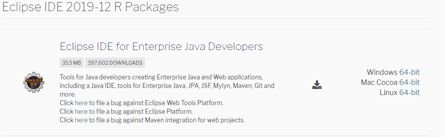
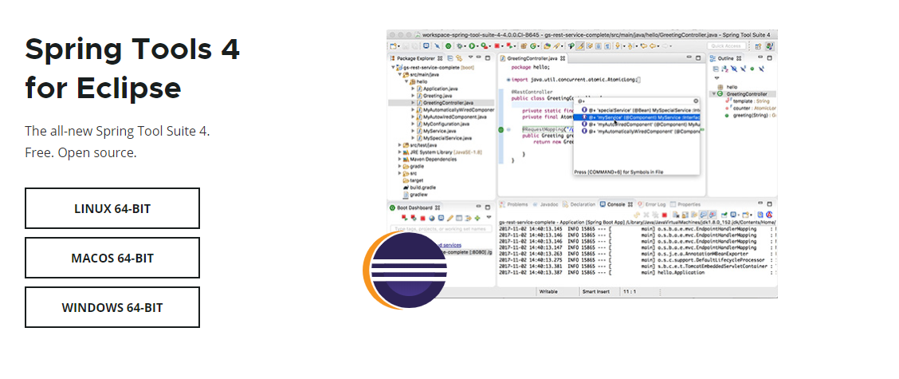
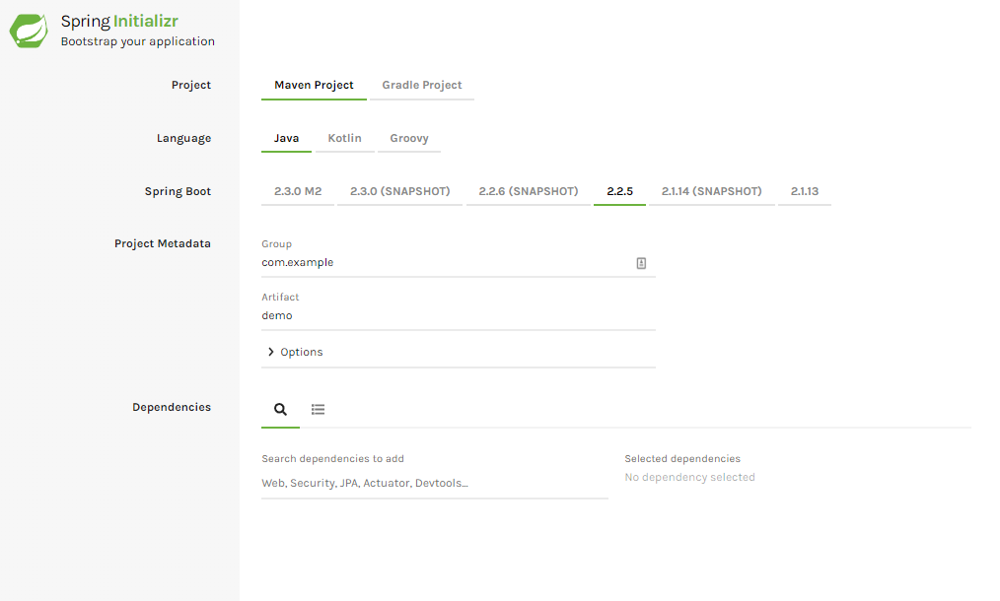

El objetivo de este post es mostrar los pasos a seguir para generar desde cero una aplicación web desarrollada con el framework Spring Boot y desplegarlo con la herramienta Heroku. De esta manera podremos mostrar nuestra propia aplicación web.
Para poder desarrollar nuestra aplicación será necesario tener instalado un IDE que podamos utilizar para ejecutar la misma en local. En esta guía utilizaremos Eclipse.
Antes de nada comprobaremos la versión de Java que tenemos instalada, para ello abriremos la consola de comandos y ejecutaremos lo siguiente:
C:\Users\javier> java -version
java version "1.8.0_131"
Java(TM) SE Runtime Environment (build 1.8.0_131-b11)
Java HotSpot(TM) 64-Bit Server VM (build 25.131-b11, mixed mode)Para poder utilizar el framework Spring Boot 2 necesitaremos tener instalada la versión 8 u 11 de Java.
Cuando tengamos instalada la versión adecuada de Java, instalaremos Eclipse. Para ello accederemos a la web de descarga, y nos descargaremos el siguiente paquete:
Y nos solicitará indicar la carpeta donde se encontrarán los proyectos con los que trabajemos. Por defecto la carpeta es generada en el directorio del usuario.
Una vez tengamos eclipse instalado, añadiremos la extensión del framework de Spring. Para ello accederemos a la siguiente url y nos descargaremos el plugin:
El fichero que nos habremos descargado será un .jar, por lo que para poder añadir el plugin a nuestro Eclipse, deberemos desde el mismo abrir la siguiente ventana:

Una vez tengamos nuestro entorno de desarrollo configurado, pasaremos a generar el proyecto Spring. Esto es bastante sencillo gracias a la herramienta Spring Initializr
